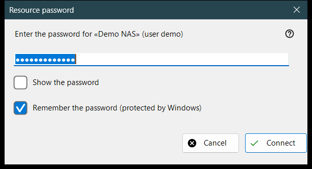
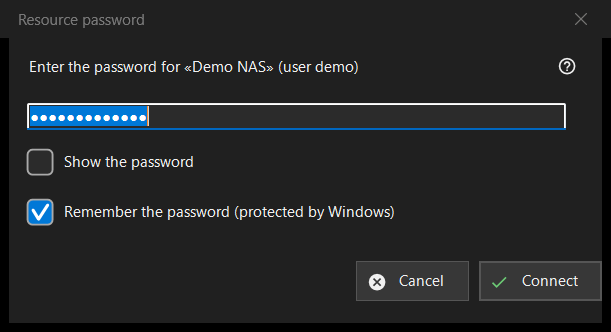

Resource password
What this is for
Asks for the password of a saved server or network folder. It opens when you open a resource whose password is not saved, when the saved one is refused, when a destination folder on a server or an import needs the password, and with the caption «Resource PIN» for a folder protected by a PIN.


In this order
- Type the password; it is masked, and «Show the password» reveals it.
- Decide whether to keep «Remember the password (protected by Windows)» ticked.
- Press «Connect» (Enter), or «Cancel» (Esc) to stop.
The elements
The password
The prompt names the resource and the user. The password is used exactly as typed, spaces included. An empty field gives «Enter the password». «Show the password» is off at the start.
Remember the password
The box is ticked by default. Ticked, the password is stored encrypted by Windows for your account, and only after a connection has proved it; unticked, it is kept in memory for the current run only. The box is hidden where the password is stored anyway, such as when a settings file is imported, and in PIN mode.
A refused password
If the server refused the previous password, a line says «The password was not accepted. Enter it again.» and the window asks again.
PIN mode
For a folder protected by a PIN the caption is «Resource PIN» and the prompt asks for the PIN of the named resource. There is no remember box, and a refused PIN gives «The PIN was rejected. Enter it again.»